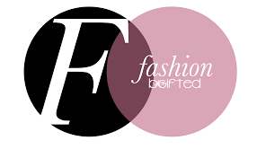
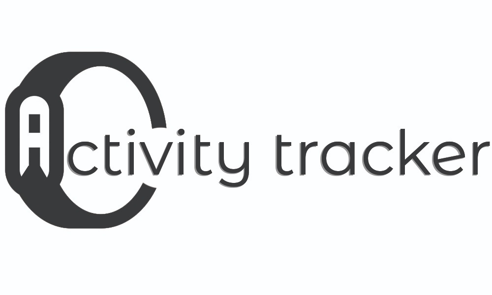
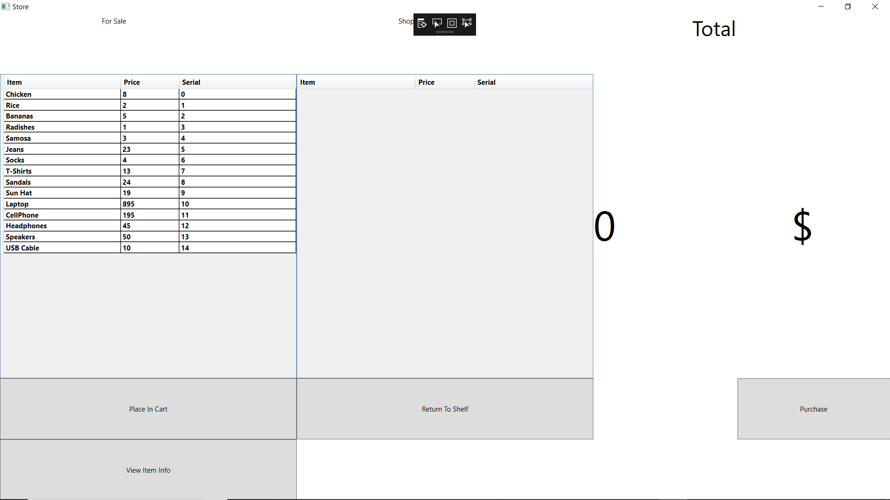
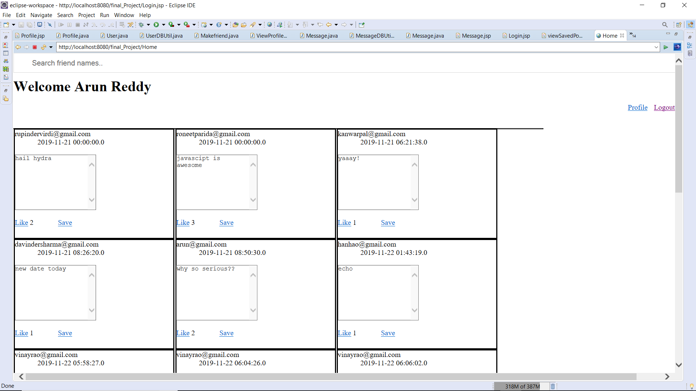

Pursuing Post Graduation Diploma in Programming and Web Technologies. Knowledgeable in designing and testing.
Expert in on page and off page SEO of website and application. Proficient in an assortment of designing tools,
including Adobe XD, Photoshop, InVision. Creative, quick learner and always looking forward to face new challenges.
Skills
Development: PHP, HTML, Java, HTML5, XML, CSS3, Bootstrap, C#, C/C++
Designing Tools: Photoshop, Adobe XD, InVision
Design patterns: MVC, Agile Methodology, Scrum
Version Control Systems: GitHub, Bitbucket, Putty, FileZilla
Development Tools – Database: MySQL, SQL, SQLite
Task Management Tools: Jira, Trello
IDEs: Visual Studio Code, Visual Studio and Android Studio

This website shows trends in fashion world from all around the globe acording to seasons and location.
Technologies used: HTML5, CSS3, Adobe XD

This is Web application which is fully responsive. We can use this aap to track our daily activies in day to day life.
Technologies used: PHP, JavaScript, CSS, HTML, MySQL

This is website where user can buy things. They can add, remove products from the card as well.
Technologies used: C#, Visual Studio

This web application is for communication with friends, family and even strangers. You can post photos or status and let the world know about your fillings. YOu can like the post too.
Technologies used: Java, Servlet, JSP, MySQL
THis is simple android application where a person can play game of Tic Tac Toe.
Technologies used: Android Studio, Java, SQLite